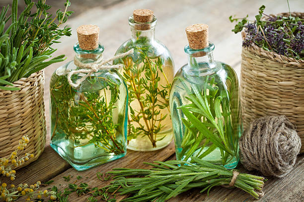

¿Que son los Oleatos Villaeno?
Un oleato es un preparado natural que se obtiene al infusionar plantas, raices o semillas nutricionales, medicinales o aromáticas en un aceite vegetal durante un período de tiempo. Durante este proceso, los componentes liposolubles de las plantas, como los aceites esenciales y los compuestos beneficiosos, se extraen y se incorporan al aceite base. Esto crea un producto en el que las propiedades y beneficios de las plantas se transfieren al aceite. Nuestro aceite base es el aceite de coco prensado al frio, debido a su composición, beneficios para la salud cardiovascular, versatilidad en la cocina, cuidado de la piel y sus propiedades antimicrobianas.